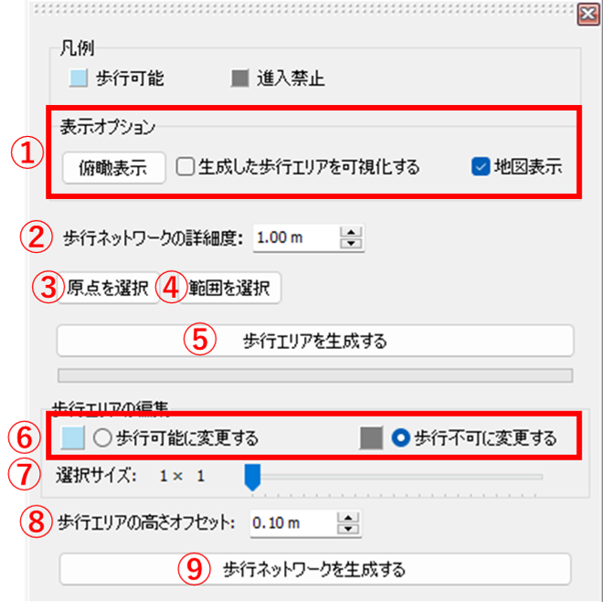
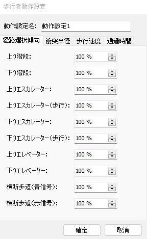

操作マニュアル
1 本書について
本書では、輸送計画検討に向けた人流シミュレーションプラグイン（UC-win/Roadプラグイン）の操作手順について記載しています。
2 使い方
2-1 プロジェクト読み込み画面
ファイル「UCwinRoad.exe」を実行すると以下の画面が表示されます。
① デフォルトのデータで新規プロジェクト（※1）を作成し、読み込みます。
② クリックするとファイルダイアログが表示され、ダイアログ内で選択された既存のプロジェクトを読み込みます。
③ 地形データや地理院タイルをもとに新規プロジェクトを作成し、読み込みます。
④ 「UCwinRoad.exe」内のブラウザから任意のプロジェクトをダウンロードし、読み込みます。
（※1）プロジェクトとは、拡張子が「.rd」のファイルのことをいいます。
2-2 CityGML読込画面
UCwinRoadメイン画面上部の「ファイル」タブ>>「インポート」>>「CityGMLファイルのインポート」をクリックすると以下の画面が表示されます。
① インポートするファイル
追加したCityGMLが一覧で表示されます。
② すべて選択
クリックすると、追加したCityGMLをすべて選択します。
③ ファイルを追加
読み込むCityGMLを追加する場合、このボタンをクリックします。
④ オプション設定
CityGML読込時の設定を行います。
⑤ インポート
追加したCityGMLを読み込む場合、このボタンをクリックします。読込完了後、自動的にCityGML読込画面を閉じます。
⑥ 閉じる
CityGMLを読み込まずにCityGML読込画面を閉じる場合、このボタンをクリックします。
⑦ ヘルプ
CityGML読込画面に関するヘルプを確認する場合、このボタンをクリックします。
2-3 人流シミュレーション設定・実行画面
CityGML読み込み後にUCwinRoadメイン画面の「CrowdSim」タブ>>「Crowd Sim Player...」ボタンをクリックすると、以下の画面が表示されます。
① 「歩行エリア/ルート編集」タブ
シミュレーションの条件設定を行う場合、このボタンをクリックすると人流シミュレーション設定画面が表示されます。
② 「ログ設定」タブ
ログの集計に関する設定を行う場合、このボタンをクリックするとログデータ集計設定画面が表示されます。
③ 「分析」タブ
シミュレーションを実行する場合、このボタンをクリックすると人流シミュレーション実行画面が表示されます。
2-3-1 人流シミュレーション設定画面
人流シミュレーションの条件設定を行う画面です。
① 歩行可能領域を設定する
シミュレーションでの歩行可能領域に関する設定を行う場合、このボタンをクリックすると地域設定画面が表示されます。
地域設定画面で歩行可能領域を設定していない場合、②～④はクリックできません。
② 横断歩道を設定する
横断歩道に関する設定を行う場合、このボタンをクリックすると横断歩道設定画面が表示されます。
③ 待機列を設定する
待機列に関する設定を行う場合、このボタンをクリックすると待機列設定画面が表示されます。
③ 人流発生・退出地点を設定する
歩行者に関する設定や人流が発生する地点または退出する地点に関する設定を行う場合、このボタンをクリックすると人流発生・退出地点設定画面が表示されます。
2-3-2 地域設定画面
シミュレーションを実施する領域（以下「メッシュ」という。）の生成・編集及びメッシュに基づいて歩行者が通行できる経路（以下「歩行ネットワーク」という。）の生成を行う画面です。
① 表示オプション
UCwinRoadメイン画面の表示に関する設定を行います。
② 歩行ネットワークの詳細度
入力された値に基づいて、メッシュを正方形のマス単位に分割します。値を小さくするほど精緻なシミュレーションを行うことができますが、シミュレーション計算にかかる時間やシミュレーション実行時の負荷が増加します。
③ 原点を選択
クリックすると、メッシュの原点を選択するモードに移行します。この状態でUCwinRoadメイン画面の地形をクリックすると、クリックした地点をメッシュの原点として設定します。
④ 範囲を選択
クリックすると、メッシュの範囲を選択するモードに移行します。この状態でUCwinRoadメイン画面の地形をクリックすると、クリックした地点をメッシュの終点として設定します。
⑤ 歩行可能領域を生成する
選択した範囲でメッシュを生成する場合、このボタンをクリックするとメッシュを生成します。生成されたメッシュは読み込んだCityGMLの属性（※1）に基づいて、マスごとに歩行可能マスと歩行不可マスを分類します。
⑥ 歩行可能に変更する/歩行不可に変更する
メッシュ生成後に歩行可能マス・歩行不可マスの編集を行う場合、いずれかのボタンが選択されている状態でUCwinRoadメイン画面の地形をクリックすると、クリックした地点のマスを歩行可能マスまたは歩行不可マスとして設定します。
⑦ 選択サイズ
クリックした地点を中心とし、表示されている値に基づいた範囲のマスをまとめて編集します。スライダーを動かすことで値を変更することができます。
⑧ 歩行領域の高さオフセット
入力された値に基づいて、メッシュの標高を変更します。ここで設定したメッシュの標高に基づいて歩行ネットワークが生成されます。
⑨ 歩行ネットワークを生成する
歩行ネットワークを生成する場合、このボタンをクリックするとメッシュの歩行可能マスに基づいて歩行ネットワークが生成（※2）されます。

（※1）3D都市モデル標準製品仕様書 第5版に準拠するCityGMLが対象となります。CityGMLの属性がLOD1の道路（tran:Road）である場合はモデルが指定する全域が、LOD3の道路（tran:Road）である場合はモデルが指定する通行可能な領域（tran:TrafficArea）が歩行可能マスとなります。
（※2）歩行ネットワークは、歩行者が目指す地点となる「ノード」というオブジェクトと、歩行者が通行できる経路となる「パス」というノード同士を結ぶ線形によって構成されます。なお、歩行ネットワークは、⑤により生成した歩行可能領域のうち歩行可能マスのみをノードとパスで繋いだものになります。
2-3-3 横断歩道設定画面
生成された歩行ネットワークについて、横断歩道に関する設定を行う画面です。
① 横断歩道の追加/変更
いずれかを選択することで、歩行ネットワークに新しい横断歩道を追加するか、既存の経路（パス）を横断歩道に変更するかが切り替わります。
② 横断歩道を追加するネットワーク
クリックすると、新しい横断歩道を追加する歩行ネットワークを選択することができます。
ここでネットワークを選択していない場合、横断歩道を追加することができません。
③ シミュレーション開始時の信号設定
シミュレーション開始時の横断歩道の信号状態を設定する場合、いずれかを選択することで横断歩道の信号がシミュレーション開始時にどの状態で始まるかが切り替わります。「通常の歩行経路」を選択している場合は横断歩道ではなく、通常のパスとして設定されます。
④ 青信号切替間隔
横断歩道の青信号が赤信号に切り替わるまでの時間を設定します。
⑤ 赤信号切替間隔
横断歩道の赤信号が青信号に切り替わるまでの時間を設定します。
⑥ 幅
横断歩道の幅を設定します。
⑦ 上記の設定で追加（変更）する
②～⑥の設定で横断歩道を追加または変更する場合、このボタンをクリックすると①で選択しているボタンに応じて横断歩道を追加（※1）または変更（※2）するモードに移行します。
⑧ 横断歩道の一覧
「横断歩道の一覧」直下のリストには、歩行ネットワークに設定されている横断歩道が一覧で表示されます。リストから横断歩道を選択すると、対応する横断歩道に視点を移動します。
「更新」をクリックすると、リストに表示されている横断歩道を更新します。
横断歩道の名前を変更する場合、リストから横断歩道を選択している状態で「選択中の横断歩道名を変更する」をクリックすると、選択している横断歩道の名前を変更できます。また、横断歩道を削除する場合、「選択中の横断歩道を削除する」をクリックすると、選択している横断歩道が削除されます。
（※1）横断歩道を追加する場合は下図のような状態になります。UCwinRoadメイン画面の地形またはノードをクリックして横断歩道の端点・節点を選択し、「新規経路の編集」画面の「確定」ボタンをクリックすることで新しい横断歩道を追加することができます。
（※2）横断歩道を変更する場合は下図のような状態になります。Ctrlキーをクリックしながらマウスをドラッグすることで範囲を選択し、範囲内のパスを③～⑥の設定値に従って一括で変更することができます。
2-3-4 人流発生・退出地点設定画面
人流シミュレーションにおいて発生する歩行者に関する設定や、歩行者が発生・退出する地点に関する設定を行う画面です。画面を閉じると、自動的に設定が反映されます。
2-3-4-1 歩行者属性設定画面
歩行者の属性に関する設定を行う画面です。人流発生・退出地点設定画面の「発生する歩行者を設定する」をクリックすると表示されます。

① 属性の追加
新しい歩行者属性を追加する場合は、このボタンをクリックします。
② 属性の削除
歩行者属性を削除する場合は、このボタンをクリックすると⑤で選択中の行（歩行者属性）が削除されます。
③ 動作設定の追加
新しい動作設定を追加する場合は、このボタンをクリックします。
④ 動作設定の削除
動作設定を削除する場合は、このボタンをクリックすると⑥で選択中の動作設定が削除されます。
⑤ 歩行者属性の一覧
追加した歩行者属性が一覧で表示されます。
属性の各項目の設定値を変更する場合は、「属性名」、「モデル」、「年齢（下限）」、「年齢（上限）」、「性別」、「動作（歩行速度等）」列を直接クリックして値を入力または選択します。
⑥ 動作設定の一覧
追加した動作設定が一覧で表示されます。
⑦ 選択中の動作設定を編集する
動作設定の内容を変更する場合は、このボタンをクリックすると歩行者動作設定画面（※1）が表示され、⑥で選択した動作設定の内容を変更することができます。
⑧ 確定
編集内容を確定して歩行者属性設定画面を閉じる場合は、このボタンをクリックします。
⑨ 取消
編集内容を取り消して歩行者属性設定画面を閉じる場合は、このボタンをクリックします。
（※1）歩行者動作設定画面では、歩行者の経路選択傾向や他の歩行者と衝突する距離、歩行速度、バス乗降時及び改札通過時の所要時間を設定します。

2-3-4-2 人流ラベル設定画面
人流のラベルに関する設定を行う画面です。人流発生・退出地点設定画面の「人流ラベルを設定する」をクリックすると表示されます。
① 人流ラベルの追加
新しい人流ラベルを追加する場合は、このボタンをクリックします。
② 人流ラベルの削除
人流ラベルを削除する場合は、このボタンをクリックすると③で選択中の人流ラベルが削除されます。
③ 人流ラベルの一覧
追加した人流ラベルの名前が一覧で表示されます。
④ 選択中のラベル名を変更する
人流ラベルの名前を変更する場合は、このボタンをクリックすると③で選択中の人流ラベルの名前を変更することができます。
⑤ 歩行者属性の割合
③で選択中の人流ラベルについて、人流歩行者属性の発生割合を変更する場合、まず「属性」から歩行者属性設定画面で設定した歩行者属性を選択します。その後、歩行者属性を選択している状態で「割合」の値を変更することで、その属性が占める割合を変更することができます。
⑥ 確定
編集内容を確定して人流ラベル設定画面を閉じる場合、このボタンをクリックします。
⑦ 取消
編集内容を取り消して人流ラベル設定画面を閉じる場合、このボタンをクリックします。
2-3-4-3 地点設定画面
人流が発生または退出する地点に関する設定を行う画面です。
① 設置する地点
設置する人流発生・退出地点の形式を選択することができます。
②-1 人流発生地点の追加
人流発生地点を追加する場合、このボタンをクリックすると①で選択した内容に従って人流発生・退出地点を追加するモード（※1）に移行します。
②-2 人流退出地点の追加
人流退出地点を追加する場合、このボタンをクリックすると①で選択した内容に従って人流発生・退出地点を追加するモード（※1）に移行します。
③-1 人流発生地点の削除
人流発生地点を削除する場合、このボタンをクリックすると④-1で選択中の人流発生地点が削除されます。
③-2 人流退出地点の削除
人流退出地点を削除する場合、このボタンをクリックすると④-2で選択中の人流退出地点が削除されます。
④-1 人流発生地点の一覧
設定した人流発生地点が一覧で表示されます。
④-2 人流退出地点の一覧
設定した人流退出地点が一覧で表示されます。
⑤ 地点名を変更
人流発生地点・人流退出地点の名前を変更する場合、このボタンをクリックすると④-1または④-2で選択中の地点の名前を変更することができます。
（※1）①で「通常の人流発生/退出地点」を選択した状態で②-1または②-2をクリックすると、下図のような状態になります。この状態でUCwinRoadメイン画面からノードをクリックすると、そのノードを人流発生・退出地点として設定します。
また、①で「複数箇所から人流が発生/退出する際の基準地点」を選択した状態で②-1または②-2をクリックすると、下図のような状態になります。この状態でUCwinRoadメイン画面からノードをクリックすると、そのノードを人流発生・退出の基準地点として設定します。
基準地点を設定すると、下図のような状態になります。この状態でUCwinRoadメイン画面から任意の地点をクリックすると、その地点を人流発生・退出地点として設定します。設定を終了する際は、Escキーをクリックします。
2-3-4-4 人流発生地点設定画面
人流が発生する地点に関する設定を行う画面です。地点設定画面の人流発生地点一覧（④-1）から人流発生地点を選択すると表示されます。
① 人流発生地点を変更
人流発生地点のノードを変更する場合、このボタンをクリックすると人流発生地点を変更するモードに移行します。この状態でUCwinRoadメイン画面からノードをクリックすると、人流発生地点を変更することができます。
② 設定した地点に視点を移動
人流発生地点がどこにあるかを確認する場合、このボタンをクリックすると人流発生地点のノードに視点を移動します。
③ 地点種別
人流発生地点の種別を選択することができます。
「バス停」を選択すると、「バスのモデル」設定と「道路」設定が有効になります。それぞれプロジェクト内に設定されているモデル及び道路を選択することができ、人流発生時にはここで設定したモデルのバスが設定した道路に出現します。
④ 人流発生規則の基準
人流発生規則の基準を選択する場合、ここをクリックします。
人流発生の規則は「時間周期」、「ダイヤ」、「1時間当たりの発生人数」の三種類となっています。
⑤ 発生規則詳細設定
選択した人流発生の規則に応じて、必要な項目を設定します。
「時間周期」では、人流が発生する時間の間隔を設定します。また、「詳細設定」ボタンをクリックすると時間帯別の人流発生倍率を設定することができます（※1）。
「ダイヤ」では「ダイヤを設定する」ボタンが表示され、クリックするとダイヤ設定画面（人流発生地点）が表示されます。
「1時間当たりの発生人数」では、「詳細設定」ボタンをクリックすると時間帯別の人流発生倍率を設定することができます（※1）。
⑥ 適用する人流ラベル
選択中の人流発生地点から発生させる人流を選択する場合、ここをクリックすると人流ラベル設定画面で設定した人流ラベルを選択することができます。
⑦ 発生する人流ラベルの追加
発生する人流を追加する場合、このボタンをクリックすると⑥で選択中の人流ラベルが発生する人流として追加されます。
⑧ 発生する人流ラベル一覧
追加した人流ラベルの名前が一覧で表示されます。
⑨ 発生する人流ラベルの削除
発生する人流を削除する場合、このボタンをクリックすると⑧で選択中の人流ラベルが発生する人流から削除されます。
⑩ 発生人数
発生する人数を変更する場合、ここの値を変更することで⑧で選択中の人流ラベルを付与された歩行者が発生する人数を変更します。「発生割合」には、選択中の人流発生地点から発生する人流のうちここで設定した人流ラベルごとの発生人数が占める割合が表示されます。
⑪ 選択しているラベルの目的地分布を設定
人流の目的地分布を設定する場合、このボタンをクリックすると⑧で選択中の人流ラベルの目的地分布を設定できる目的地分布設定画面が表示されます。
（※1）「詳細設定」ボタンをクリックすると、下図のウインドウが表示されます。ここから時間帯別の人流発生倍率を変更することができます。
2-3-4-5 ダイヤ設定画面（人流発生地点）
人流発生地点からダイヤベースで発生する歩行者の設定を行う画面です。
① インポート
保存したダイヤ設定をインポートする場合、このボタンをクリックします。
② エクスポート
現在のダイヤ設定を保存する場合、このボタンをクリックします。
③ ダイヤの追加
新しいダイヤを追加する場合、このボタンをクリックします。
④ ダイヤの削除
ダイヤを削除する場合、このボタンをクリックすると⑤で選択中の行（ダイヤ）が削除されます。
⑤ ダイヤ一覧
設定しているダイヤが一覧で表示されます。
各値を変更する場合は、「時刻」、「バスID」列をクリックしてそれぞれ値を入力します。
「降車（発生）人数」は直接変更することはできず、「降車（発生）人数」列の任意の値を選択した上で⑧で人流ラベルを選択することで、⑩の発生人数を変更することができます。
⑥ 人流ラベル
人流発生地点から発生させる人流を選択する場合、ここをクリックすると人流ラベル設定画面で設定した人流ラベルを選択することができます。
⑦ 発生する人流ラベルの追加
発生する人流を追加する場合、このボタンをクリックすると⑥で選択中の人流ラベルが発生する人流として追加されます。
⑧ 発生する人流ラベル一覧
追加した人流ラベルの名前が一覧で表示されます。
⑨ 発生する人流ラベルの削除
発生する人流を削除する場合、このボタンをクリックすると⑧で選択中の人流ラベルが発生する人流から削除されます。
⑩ 発生人数
発生する人数を変更する場合、ここの値を変更することで⑧で選択中の人流ラベルを付与された歩行者が発生する人数を変更します。
⑪ 選択しているラベルの目的地分布を設定
人流の目的地分布を設定する場合、このボタンをクリックすると⑧で選択中の人流ラベルの目的地分布を設定できる目的地分布設定画面が表示されます。
⑫ 確定
編集内容を確定してダイヤ設定画面（人流発生地点）を閉じる場合、このボタンをクリックします。
⑬ 取消
編集内容を取り消してダイヤ設定画面（人流発生地点）を閉じる場合、このボタンをクリックします。
2-3-4-6 目的地分布設定画面
人流の目的地分布に関する設定を行う画面です。
① 目的地分布
目的地ごとの分布を設定する場合、まず「目的地」から地点設定画面で追加した人流退出地点を選択します。その後、目的地を選択している状態で「割合」の値を変更すると、選択している目的地が目的地全体で占める割合を変更することができます。
② 確定
編集内容を確定して目的地分布設定画面を閉じる場合、このボタンをクリックします。
③ 取消
編集内容を取り消して目的地分布設定画面を閉じる場合、このボタンをクリックします。
2-3-4-7 人流退出地点設定画面
人流が退出する地点に関する設定を行う画面です。地点設定画面の人流退出地点一覧（④-2）から人流退出地点を選択すると表示されます。
① 目的地を変更
人流退出地点のノードを変更する場合、このボタンをクリックすると人流退出地点を変更するモードに移行します。この状態でUCwinRoadメイン画面からノードをクリックすると、人流退出地点を変更することができます。
② 設定した地点に視点を移動
人流退出地点がどこにあるかを確認する場合、このボタンをクリックすると人流退出地点のノードに視点を移動します。
③ 地点種別
人流退出地点の種別を選択することができます。
「バス停」を選択すると、「バスのモデル」設定と「道路」設定が有効になります。それぞれプロジェクト内に設定されているモデル及び道路を選択することができ、人流退出時にはここで設定したモデルのバスが設定した道路に出現します。
④ 人流退出規則の基準
人流退出規則の基準を変更する場合、ここをクリックします。
人流発生の規則は「規則なし」、「ダイヤ」、「時間周期」の三種類となっています。
⑤ 退出規則詳細設定
選択した人流発生の規則に応じて、必要な項目を設定します。
「規則なし」では設定する項目はありません。
「ダイヤ」では「ダイヤを設定する」ボタンが表示され、クリックするとダイヤ設定画面（人流退出地点）が表示されます。
「時間周期」では、人流が退出する時間の間隔を設定します。また、周期ごとに一度に退出できる最大人数を設定します。
2-3-4-8 ダイヤ設定画面（人流退出地点）
人流退出地点からダイヤベースで退出する歩行者の設定を行う画面です。
① インポート
保存したダイヤ設定をインポートする場合は、このボタンをクリックします。
② エクスポート
現在のダイヤ設定を保存する場合は、このボタンをクリックします。
ダイヤ設定はCSVファイルで保存されます。
③ ダイヤの追加
新しいダイヤを追加する場合は、このボタンをクリックします。
④ ダイヤの削除
ダイヤを削除する場合はこのボタンをクリックすると、⑤で選択中の行（ダイヤ）が削除されます。
⑤ ダイヤ一覧
設定しているダイヤが一覧で表示されます。
各値を変更する場合は、「時刻」、「座席数」、「最大乗車率（％）」、「バスID」列をクリックしてそれぞれ値を入力します。
「乗車（退出）可能人数」は直接変更することはできず、「座席数」と「最大乗車率（％）」に基づいて自動で計算されます。
⑥ 確定
編集内容を確定してダイヤ設定画面（人流退出地点）を閉じる場合は、このボタンをクリックします。
⑦ 取消
編集内容を取り消してダイヤ設定画面（人流退出地点）を閉じる場合は、このボタンをクリックします。
2-3-5 待機列設定画面
生成された歩行ネットワークについて、歩行者が待機する行列（以下「待機列」という。）に関する設定を行う画面です。
2-3-5-1 待機列形成範囲設定画面
待機列を形成するための範囲を設定する画面です。
① 設定した待機列形成範囲を常に可視化する
待機列設定画面を閉じていても設定した待機列形成範囲を可視化する場合、ここのチェックを入れます。
② 待機列形成範囲名
設定する待機列形成範囲の名前を入力します。
③ 待機列形成範囲を選択する
待機列形成範囲を設定する場合、このボタンをクリックすると待機列形成範囲を選択するモード（※1）に移行します。
（※1）③をクリックすると下図のような状態になります。この状態でUCwinRoadメイン画面からノードをクリックすると、そのノードが待機列追加先として設定されます。
ノード選択後は下図のような状態になります。Ctrlキーをクリックしながらマウスをドラッグすることで範囲を選択し、待機列形成範囲を設定することができます。
2-3-5-2 待機列形成設定画面
設定した待機列形成範囲に基づいて待機列を設定する画面です。
① 待機列形成範囲
待機列形成範囲に対して各設定を入力する場合、ここをクリックすると設定した待機列形成範囲を選択できます。
② 選択した範囲に視点を移動する
待機列形成範囲がどこにあるかを確認する場合は、このボタンをクリックすると①で選択した待機列形成範囲に視点が移動します。
③ 選択した範囲を削除する
待機列形成範囲を削除する場合は、このボタンをクリックすると①で選択した待機列形成範囲が削除されます。
④ 待機列追加先
①で選択した待機列を設定した際に選択したノードが表示されます。
待機列追加先のノードを変更する場合は、「変更」をクリックすると待機列追加先のノードを変更するモードに移行します。この状態でUCwinRoadメイン画面からノードをクリックすると、待機列追加先のノードを変更することができます。
待機列追加先のノードがどこにあるかを確認する場合は、「移動」をクリックすると対応するノードに視点が移動します。
⑤ 紐づいたバス停
待機列に並ぶ歩行者の最終的な目的地となるバス停（ノード）が表示されます。
バス停を変更する場合は、「変更」をクリックするとバス停を変更するモードに移行します。この状態でUCwinRoadメイン画面からノードをクリックすると、バス停を変更することができます。
バス停がどこにあるかを確認する場合は、「移動」をクリックすると対応するノードに視点が移動します。また、バス停の紐づけを解除する場合は「×」をクリックします。
⑥ 列に並ぶ歩行者の間隔
待機列に並ぶ歩行者同士の間隔を設定します。
⑦ 退出時間の基準
歩行者が待機列から退出する際の基準を設定する場合、ここから基準を選択します。
基準は「バス停のダイヤに基づいて退出」と「一定の周期で退出」の二種類となっています。
⑦-1 バス停のダイヤに基づいて退出
⑤で選択中のノードに設定されている人流退出地点（地点種別：バス停）のダイヤ設定を参照して待機列から歩行者を退出させます。
バス停については地点設定画面及び人流退出地点設定画面、バス停のダイヤについてはダイヤ設定画面（人流退出地点）で設定します。
⑦-2 一定の周期で退出
ユーザが入力した設定値に基づいて、一定の周期で待機列から歩行者を退出させます。
「待機列から抜ける時間の間隔」で歩行者が退出する時間の間隔を、「待機列から一度に抜ける人数」で一度に退出できる最大人数を設定します。
⑧ 待機列の紐づけ
「待機列」の直下のリストには④で選択中のノードに設定されている待機列が表示されます。このリストから待機列を選択し、「⇒」ボタンをクリックするとその待機列と⑤～⑦の設定が紐づけられます。
「紐づいている待機列」の直下のリストには上記の操作で設定と紐づけた待機列が表示されます。このリストから待機列を選択し、「⇐」ボタンをクリックするとその待機列との紐づけが解除されます。
⑨ 待機列を設定する
クリックすると、④に指定されているノードに待機列を追加するモード（※1）に移行します。
（※1）⑨をクリックすると下図のような状態になります。「ノードの編集」画面の「＋」ボタンをクリックすると待機列の追加が開始されます。
待機列追加中は下図のような状態になります。この状態でUCwinRoadメイン画面から形成範囲内の任意の地点をクリックすると、クリックした地点に沿って待機列を形成することができます。
形成完了後は「待ち行列の編集」画面の「確定」>>「ノードの編集」画面の「確定」をクリックし、その後Escキーをクリックして待機列を追加するモードを終了します。
2-3-6 ログデータ集計設定画面
人流シミュレーションのログデータ集計に関する設定を行う画面です。
① ログ出力設定
各出力項目を出力するかどうかを切り替える場合、各チェックマーク欄をクリックしてチェックを入れる、または外します。
② 計測範囲左上を選択
クリックすると、断面交通流計測範囲の左上（※1）を選択するモードに移行します。この状態でUCwinRoadメイン画面の地形をクリックすると、クリックした地点を断面交通流計測範囲の左上座標として設定します。
③ 計測範囲右下を選択
クリックすると、断面交通流計測範囲の右下（※1）を選択するモードに移行します。この状態でUCwinRoadメイン画面の地形をクリックすると、クリックした地点を断面交通流計測範囲の右下座標として設定します。
④ 計測範囲名
設定する断面交通流計測範囲の名前として設定します。
⑤ 計測範囲を追加
②～④の設定で計測範囲を追加する場合、このボタンをクリックします。
⑥ 計測範囲確認
クリックすると、追加した断面交通流計測範囲を選択できます。計測範囲を選択すると、対応する計測範囲がUCwinRoadメイン画面上で強調表示されます。
⑦ 選択中の計測範囲を削除
⑥で選択した計測範囲を削除する場合、このボタンをクリックします。
⑧ 計測範囲の一覧
追加した計測範囲に関する情報が一覧で表示されます。
（※1）断面交通流計測範囲の左上・右下は南からの視点が基準となります。
2-3-7 人流シミュレーション実行画面
人流シミュレーションの実行に関する操作を行う画面です。
① 天候
シミュレーション実行時の天候を設定することができます。
② シミュレーション実行
UCwinRoadメイン画面上でシミュレーションを実行する場合、このボタンをクリックします。
③ シミュレーション終了
実行中のシミュレーションを終了する場合、このボタンをクリックします。シミュレーション終了後、出力データ選択画面が表示されます。また、シミュレーションのリプレイができるようになります。
④ リプレイ
シミュレーションのリプレイを再生する場合、このボタンをクリックします。ただし、直前にシミュレーションが実行されている必要があります。
⑤ 再生速度
巻き戻しおよび早送り時の再生速度の倍率を設定することができます。
⑥ 巻き戻し
リプレイを巻き戻す場合、このボタンをクリックします。巻き戻し中に再度クリックすると、巻き戻しを終了します。
⑦ 早送り
リプレイを早送りする場合、このボタンをクリックします。早送り中に再度クリックすると、早送りを終了します。
⑧ 一時停止
リプレイを一時停止する場合、このボタンをクリックします。一時停止中に再度クリックすると、一時停止を解除します。
⑨ 停止
リプレイを停止する場合、このボタンをクリックします。
⑩ シミュレーション開始時刻
入力された日時からシミュレーションが開始されます。
⑪ シミュレーション終了時刻
入力された日時になると、自動的にシミュレーションが終了します。
⑫ 出力ディレクトリ
出力するMF-JSONの出力先を指定します。
⑬ 出力ファイル名
出力するMF-JSONのファイル名を入力します。
⑭ AGENT座標出力間隔
MF-JSONを出力する際に、シミュレーションでの各歩行者の座標を入力された秒数ごとに出力します。0秒とした場合は全ての座標を出力します。
⑮ シミュレーション結果のMF-JSONを出力
MF-JSONを出力する場合、このボタンをクリックします。
2-3-8 出力データ選択画面
実行中のシミュレーションを停止すると、以下の画面が表示されます。
① 「断面交通流解析結果」タブ
断面交通流解析結果画面を表示する場合、このボタンをクリックします。
② 「ヒートマップ生成」タブ
ヒートマップ生成画面を表示する場合、このボタンをクリックします。
③ 「バス乗降結果」タブ
バス乗降結果画面を表示する場合、このボタンをクリックします。
③ 「待機列形成結果」タブ
待機列形成結果画面を表示する場合、このボタンをクリックします。
③ 「OD通過ログ」タブ
旅行時間計測結果画面を表示する場合、このボタンをクリックします。
2-3-8-1 断面交通流解析結果画面
シミュレーション実行中に各断面交通流計測範囲を通過した人数が折れ線グラフで表示されます。縦軸は人数、横軸はシミュレーション経過時間となります。
「解析結果を画像として保存する」をクリックするとファイルダイアログが表示され、解析結果のグラフを画像データとしてダイアログ内で選択されたフォルダに出力します。
2-3-8-2 ヒートマップ生成画面
① ヒートマップを生成するシミュレーション区間
入力されたシミュレーション区間の人流がヒートマップとして生成されます。
② ヒートマップを生成する
ヒートマップ生成結果画面を表示する場合、このボタンをクリックします。

ヒートマップ生成結果画面では、指定されたシミュレーション区間の人流のヒートマップが表示されます。
「方角を表示する」をクリックすると、ヒートマップ左上に方角を示す画像が表示されます。
ヒートマップを保存する場合は、「画像として保存する」をクリックします。
2-3-8-3 バス乗降結果画面
シミュレーション実行中にバスに乗車または降車した人数および乗車率が棒グラフで表示されます。縦軸は人数または乗車率、横軸はバスのIDとなります。
① グラフの切替
クリックすると、選択したデータを集計したグラフが表示されます。
② バス停の切替
クリックするとバス停一覧が表示されます。バス停を選択すると、そのバス停での集計結果のグラフが表示されます。
③ 解析結果を画像として保存する
解析結果のグラフを保存する場合は、このボタンをクリックします。
2-3-8-4 待機列形成結果画面
シミュレーション実行中に各待機列に並んだ歩行者の平均待ち時間、待機人数、追加人数、退出人数、累計退出人数が折れ線グラフで表示されます。縦軸は待ち時間または人数、横軸はシミュレーション経過時間となります。
① グラフの切替
クリックすると、選択したデータを集計したグラフが表示されます。
② グラフ表示のON/OFF
確認不要なグラフ等がある場合、凡例左のチェックマーク欄をクリックすると待機列ごとにグラフの表示・非表示が切り替わります。
③ 解析結果を画像として保存する
解析結果のグラフを保存する場合は、このボタンをクリックします。
2-3-8-5 旅行時間計測結果画面
シミュレーション実行中に各経路を通過した歩行者の旅行時間が折れ線グラフで表示されます。縦軸は旅行時間、横軸はシミュレーション経過時間となります。
① グラフ表示のON/OFF
確認不要なグラフ等がある場合、凡例左のチェックマーク欄をクリックすると経路ごとにグラフの表示・非表示が切り替わります。
② 解析結果を画像として保存する
解析結果のグラフを保存する場合は、このボタンをクリックします。
3 出力データ
本システムで出力されるデータは以下のとおりです。
| 出力データ | 内容 | データ形式 |
|---|---|---|
| シミュレーション計算結果の人流データ | シミュレーション実行結果を汎用フォーマット人流データに変換したデータ。 | JSON |
| 断面交通流ログ | 断面交通流計測範囲名、シミュレーション経過時間、シミュレーション時刻、計測範囲（緯度・経度）及びその座標、通過人数を記載したデータ。 | CSV |
| 断面交通流解析グラフ | 断面交通流計測範囲の通過人数を折れ線グラフで記録した画像データ。 | PNG、JPEG、BMP |
| ヒートマップ | メッシュのマスごとの通過人数をヒートマップで記録した画像データ。 | PNG、JPEG、BMP |
| バス乗降ログ | バスごとのID、出発時のシミュレーション経過時間、出発時刻、到着時刻、乗車人数、降車人数、乗車率を記載したデータ。 | CSV |
| バス乗降結果グラフ | バス停ごとの乗降結果を棒グラフで記録した画像データ。 | PNG、JPEG、BMP |
| 待機列形成ログ | 待機列ごとの名前、平均待ち時間、最大待ち時間、平均待機人数、最大待機人数、累計退出人数を記載したデータ。 | CSV |
| 待機列形成結果グラフ | 待機列の形成結果を折れ線グラフで記録した画像データ。 | PNG、JPEG、BMP |
| 旅行時間計測ログ | 経路ごとの発生開始時刻、発生終了時刻、発生地点、目的地点、ラベル、到着人数、通過時間を記載したデータ。 | CSV |
| 旅行時間計測結果グラフ | 経路ごとの旅行時間を折れ線グラフで記録した画像データ。 | PNG、JPEG、BMP |
3-1 シミュレーション計算結果の人流データ
シミュレーション実行画面より、人流シミュレーションの実行結果が汎用フォーマット人流データ（JSON形式）で出力されます。
出力されたJSONファイルは人流可視化ツールでの利用が可能です。
3-2 断面交通流ログ
シミュレーション集計設定画面で追加した断面交通流計測範囲ごとに、計測範囲名、シミュレーション経過時間、シミュレーション時刻、計測範囲（緯度・経度）及びその座標、通過人数がCSV形式で出力されます。

3-3 断面交通流解析グラフ
断面交通流解析結果画面より、断面交通流解析結果のグラフが画像（PNG、JPEG、BMP形式）で出力されます。
3-4 ヒートマップ
ヒートマップ生成結果結果画面より、ヒートマップとその凡例が画像（PNG、JPEG、BMP形式）で出力されます。
3-5 バス乗降ログ
バスごとのID、出発時のシミュレーション経過時間、出発時刻、到着時刻、乗車人数、降車人数、乗車率がCSV形式で出力されます。
3-6 バス乗降結果グラフ
バス乗降結果画面より、バス停ごとの乗車人数、降車人数、乗車率を記録したグラフが画像（PNG、JPEG、BMP形式）で出力されます。
3-7 待機列形成ログ
待機列ごとの名前、平均待ち時間、最大待ち時間、平均待機人数、最大待機人数、累計退出人数がCSV形式で出力されます。
3-8 待機列形成結果グラフ
待機列形成結果画面より、待機列ごとの平均待ち時間、待機人数、追加人数、退出人数、累計退出人数を記録したグラフが画像（PNG、JPEG、BMP形式）で出力されます。

3-9 旅行時間計測ログ
経路ごとの発生開始時刻、発生終了時刻、発生地点、目的地点、ラベル、到着人数、通過時間がCSV形式で出力されます。
3-10 旅行時間計測結果グラフ
旅行時間計測結果画面より、経路ごとの旅行時間を記録したグラフが画像（PNG、JPEG、BMP形式）で出力されます。